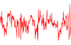

Temperature Deviations from
University of East Anglia
Monthly Surface air temperature anomalies for the period 1851-1996 have been calculated by the
Climate Research Unit (CRU) of the University of East Anglia,
using data from several sources (Jones et al., 1986 a,
b & c,
and 1991). The anomalies consist of land
and ocean temperature departures from the 1961-1990 reference period, and are given on a 5° x 5°
world grid. Hemispherical and global monthly and annual means are also included starting with 1856.
Please note that this dataset was recently revised (Jones, 1994);
in the older dataset the
reference period was 1951-1970, fewer stations were included, and the gridding method was a little
different. This dataset is very important for climate change studies. Despite relatively poor data
coverage initially and around the two World Wars, the generally cold end of the nineteenth century
and substantial warming from 1920 to 1940 are clearly shown. Slight cooling of the Northern Hemisphere
took place between the 1950s and 1994, but this was followed by a warming trend in the 1980s and 1990s
(Parker et al., 1994; Jones, 1994).
The temperature records were obtained from various archives: the World Weather Records, published
by the Smithsonian Institution (1927, 1935, 1947), and the U. S. Weather Bureau (1959-1982);
material collected in the meteorological archives; and sea surface temperature data derived
from the United Kingdom Meteorological Office's data bank (UKMO; Bottomley et al., 1990), and the Comprehensive Ocean Atmosphere Data
Set (COADS;
Woodruff et al., 1987). The data from the several sources were carefully
examined and corrections were made to compensate for known measurement problems. A brief discussion
of the necessary corrections is given in Jones et al. (1991) and
Parker et al., (1994). Hansen and
Lebedeff (1987) and Vinnikov et al. (1990) have also formed
surface temperature anomaly datasets covering essentially the same period. All three datasets draw
most of their land measurements from the same data archives and on hemispherical and global scales
show similar temperature trends. The CRU East Anglia dataset is however
unique in combining land and ocean temperature anomalies for long term analysis. Thus it shows
regional mid ocean temperature anomalies that are suppressed in the land measurement only datasets.
The corrections for the land measurements also differ among the three datasets; thus while the
general trends of the three datasets are similar there are some differences.
For the convenience of the user, the Goddard Institute for Space Studies (GISS) Global Monthly
and Annual Average Temperature Deviations are given for comparison purposes. Also available on this
site is the Southern Oscillation Index. It is the normalised sea surface pressure difference between
Tahiti and Darwin. The method of calculation is given in Ropelewski and
Jones (1987). All missing
Darwin data are infilled from Djakarta. Missing Tahiti data are infilled from Apia, Suva and
Santiago. Because of the missing data, some of the years before about 1920 are slightly less reliable
than the later values.
 Southern Oscillation Index
from University of East Anglia
Concerns have grown over recent years about the low-frequency fluctuations in the El Niño - Southern
Oscillation (ENSO) and its possible modulation by the greenhouse effect. In order to gain a greater
understanding of the longer term variability and influence of this near global, ocean-atmosphere
phenomenon, attempts have been made to distinguish between wider ranging ENSO phases based on related
eastern hemisphere events and more localised El Niño events, which influence only the immediate
South American region. The Southern Oscillation Index (SOI) based on the Tahiti-Darwin mean sea level
pressure difference is an important indicator in the study of these events.
The method of calculation for the SOI is given in Ropelewski and Jones
(1987). There are various ways of differencing the Tahiti and Darwin data. All missing Darwin
data are infilled from Djakarta. Missing Tahiti data are infilled from Apia, Samoa Suva, Fiji and
Santiago, Chile. Because of the missing data, some of the years before about 1920 are somewhat less
reliable than the later values.
Global Mean Surface Air
Temperature Anomalies from NASA GISS
Global mean monthly, seasonal and annual temperature anomalies are given. The anomalies are variations
from the means determined for the base period 1951-1980. These data are an update of the analyses
described by Hansen and Lebedeff (1987 & 1988). The input data
for these analyses come from about 4000 meteorological stations around the world. This work was done
at the Goddard Institute for Space Studies (GISS) by Dr. James Hansen and his colleagues. On their
site, they update the analysis each month. The data for earlier months and years changes slightly
as additional stations are added and as the preliminary data for the most recent months are replaced
by final values. The annual-mean global-mean temperature anomaly in recent decades is estimated to
have a two-sigma uncertainty of about 0.07 degrees C due to incomplete spatial coverage of stations.
Thus the relative rank of different years is uncertain for years whose temperatures differ by less
than that amount. At this Goddard site the tables are updated periodically, but not monthly. The
complete GISS analysis considers regional as well as global mean temperature variations. In the brief
summary presented at this site only the global means are given.